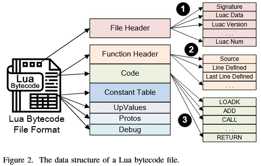
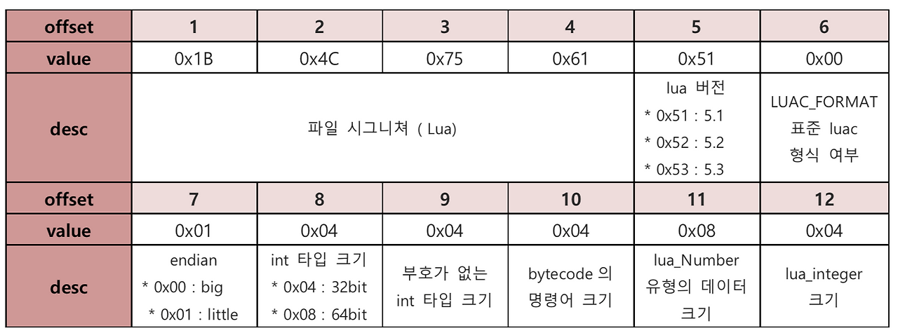

[Research] Custom Lua Script Decompile (KR)
안녕하세요! Hackyboiz에서 가장 낮은 곳(low-level)을 맡고 있는 newp1ayer48 입니다! 🤸🏻♂️
임베디드 기기에서 주로 사용되는 언어가 있습니다. 바로 Lua Script입니다!
임베디드 기기와 업체들은 이 Lua Script를 Custom으로 변형하여 사용하는 경우가 있습니다. 이 경우에는 컴파일 된 Lua Script를 디컴파일하는 과정에서 디컴파일이 제대로 이루어지지 않는 경우가 많습니다.
그래서… 분석을 위해 직접 디컴파일 도구를 개량하고 패치 했습니다… 최종 패치 된 도구의 Github을 먼저 확인하셔도 좋습니다!
Lua Script에 대한 설명부터, 이렇게 Custom된 Lua Script를 디컴파일하는 방법에 대해서 다뤄보겠습니다!
1. Lua Script
Lua Script는 브라질 리우데자네이루의 교황청 가톨릭 대학교(PUC-Rio) 팀에서 개발한 스크립트 언어입니다!(신의 언어..?) 작고 가볍다는 특징과 함께 시스템 제어도 가능하기 때문에, 임베디드 시스템과 게임 개발에서 자주 사용된다고 합니다. 가볍고 강력한 스크립트 언어 기능 덕분에, Wireshark 플러그인 개발이나 Custom Dissectors 같이 프로토콜 레벨에서 동작하는 도구로써도 유용한 모습을 보여줍니다. 공식 사이트에 설치 및 각 라이브러리와 함수의 사용에 대해서 모두 명시되어 있습니다. Lua는 5.1 버전부터 현재 5.4 버전까지 존재합니다.
또한, C/C+과 연동 및 확장성이 매우 뛰어나다는 특징을 가지고 있습니다. C/C++처럼 Lua도 컴파일을 통해 파일을 빌드 할 수 있고, 이 때문에 기기나 프로그램 내부에서 컴파일 된 Lua 파일들을 확인할 수 있습니다. 파일 확장자는 스크립트 파일의 경우 .lua이고 컴파일 된 파일은 .luac 입니다. 그러나 .lua 확장자로도 컴파일 된 파일이 존재하므로 파일 헤더를 확인하는 것이 제일 확실합니다.
보안 관점에서 Lua는 취약점이 발생할 수 있는 주요 벡터로 작용할 수 있습니다. os.execute() 같은 함수로 시스템 명령어를 실행하고 전달할 수 있기 때문에, Command Injection 취약점이 주로 발생하는 경우가 많습니다. 그리고 Stack과 Heap 메모리에서도 Memory Corruption과 Overflow 취약점도 발생하여 CVE가 제보 되고 있습니다.
1.1. openwrt와 Luci
openwrt는 임베디드 기기 중 공유기를 대상으로 만들어진 리눅스 배포판 입니다. 공식 사이트를 통해 배포판을 설치할 수 있고, openwrt를 통해 만들어진 공유기 정보가 사이트에 상세히 명시되어 있습니다. 임베디드 해킹 및 관련 지식을 얻기에도 상당히 좋은 사이트입니다! 그리고 임베디드 해킹을 진행하다가 공유기를 분석하다 보면, openwrt 프로젝트를 기반으로 개발된 공유기와 펌웨어를 자주 확인할 수 있습니다.
openwrt로 개발된 프로젝트와 펌웨어에서 Lua 스크립트를 자주 사용합니다. 특히 웹 인터페이스를 편리하게 구성하기 위해 개량된 Lua 스크립트를 사용하는 Luci가 내장되어 있는 경우가 많습니다. Lua 5.1 버전을 주로 사용하는 경우가 많기 때문에, 분석하는 Lua 파일은 주로 5.1 버전인 경우가 많습니다.
2. Lua Decompiler: luadec

컴파일 된 Lua 파일의 경우 소스 코드를 확인하기 어려운 경우가 있습니다. 이 경우에는 Lua 디컴파일러를 통해 원본 소스 코드를 확인 할 수 있습니다. 디컴파일러는 C 기반의 luadec과 Java 기반에 unluac이 대표적입니다. unluac은 5.2 이상의 버전부터 디컴파일 성능이 좋다는 평가가 많습니다. 이번 연구 글에서는 5.1 버전의 Lua 파일을 대상으로 하기 때문에, luadec을 기준으로 디컴파일을 진행하도록 하겠습니다.
순정 luadec은 openwrt 패치가 적용되지 않았기에, 관련 패치를 진행해야 디컴파일이 수월하게 이루어집니다. luadec 설치와 openwrt 패치를 적용은 아래처럼 진행하시면 됩니다.
sudo apt-get update
sudo apt-get install libncurses-dev libreadline-dev
git clone https://github.com/viruscamp/luadec
cd luadec
git submodule update --init lua-5.1
ref=master
patch_dir=patches.$ref
mkdir $patch_dir && cd $patch_dir
patchs=$(curl -sSL -H 'Accept: application/vnd.github.v3+json' 'https://api.github.com/repos/openwrt/openwrt/contents/package/utils/lua/patches?ref='"$ref" |grep -oP 'name\"\s*:\s*\".*\.patch' |grep -oP '\d+.*\.patch')
for p in $patchs;do
wget 'https://raw.githubusercontent.com/openwrt/openwrt/master/package/utils/lua/patches/'${p} -O $p;
done
cd ../lua-5.1
for i in ../${patch_dir}/*.patch; do patch -p1 <$i ; done
MAKEFILE="src/Makefile"
cp "$MAKEFILE" "$MAKEFILE.bak"
sed -i '/# USE_READLINE=1/a PKG_VERSION = 5.1.5' "$MAKEFILE"
sed -i 's/CFLAGS= -O2 -Wall $(MYCFLAGS)/CFLAGS= -fPIC -O2 -Wall $(MYCFLAGS)/' "$MAKEFILE"
sed -i 's/$(CC) -o $@ -L\. -llua $(MYLDFLAGS) $(LUA_O) $(LIBS)/$(CC) -o $@ $(LUA_O) $(MYLDFLAGS) -L. -llua $(LIBS)/' "$MAKEFILE"
sed -i 's/$(CC) -o $@ -L\. -llua $(MYLDFLAGS) $(LUAC_O) $(LIBS)/$(CC) -o $@ $(LUAC_O) $(MYLDFLAGS) -L. -llua $(LIBS)/' "$MAKEFILE"
cd src
make linux
export LD_LIBRARY_PATH=`pwd`/src/
cd ../../luadec
make LUAVER=5.1
sudo cp luadec /usr/local/bin/설치 및 패치 진행 후 예제 파일을 디컴파일하면 아래처럼 디컴파일 결과의 일부를 확인할 수 있습니다.
./luadec ./luaFile.lua-- params : ...
-- function num : 0
module("luci.controller.login", package.seeall)
local l_0_0 = require("luci.model.controller")
local l_0_1 = require("nixio")
local l_0_2 = require("nixio.fs")
local l_0_3 = require("luci.sys")
local l_0_4 = require("luci.util")
local l_0_5 = require("luci.tools.error")
local l_0_6 = require("luci.model.log")
local l_0_7 = require("luci.tools.debug")
local l_0_8 = require("luci.json")
local l_0_9 = (require("luci.tools.datatypes"))
local l_0_10 = nil
local l_0_11 = "/var/run/luci-attempts.lock"
local l_0_12 = "/tmp/luci-attempts"
local l_0_13 = "/tmp/TIME_STAMP"
local l_0_14 = Unknown_Type_Error
local l_0_15 = Unknown_Type_Error
local l_0_16 = Unknown_Type_Error
local l_0_17 = Unknown_Type_Error
local l_0_18 = Unknown_Type_Error
local l_0_19 = Unknown_Type_Error
local l_0_20 = Unknown_Type_Error
local l_0_21 = Unknown_Type_Error
local l_0_22 = "users"
local l_0_23 = "02008001"
local l_0_24 = Unknown_Type_Error
local l_0_25 = "02108001"
local l_0_31 = function(l_1_0)
...디컴파일 결과를 확인하면 해석하지 못하는 변수나 값이 존재하는 것을 확인할 수 있습니다.
이렇게 해석이 되지 않는 경우에는 분석할 때 어려움을 느낄 수 있습니다.
3. Decompiling custom lua files with luadec
예제 파일을 대상으로 luadec 디컴파일 시, 발생하는 디컴파일 에러는 아래와 같이 정리할 수 있습니다.
- 비정상적인 테이블 초기화
SetList fails
- 알 수 없는 상수 데이터 타입
Unknown_Type_Error
- 제어 흐름 분석 실패
cannot find blockend
이 중 luadec에서 디컴파일의 핵심 기능을 담당하는 소스 파일은 다음과 같습니다.
decompile.cluadec이 디컴파일할 때, 주요하게 작동하는 소스 코드입니다. lua 파일의 바이트 코드를 해석하고 변수와 제어 흐름 등의 디컴파일의 핵심 로직이 모두 이 파일 안에 존재합니다.
proto.c상수 값 해석을 담당하는 소스 코드입니다. 바이트 코드에 저장된 숫자, 문자열, bool 등의 상수 값을 텍스트로 해석합니다. 또한, Opcode에 인자를 나눠주는 역할도 합니다.
위와 같은 디컴파일 에러를 해결하기 위해, 제가 실시한 분석과 luadec 패치 방안에 대해서 알아보겠습니다!
3.1. Lua 파일 분석

Lua 파일 구조는 해당 논문에서 발췌한 위 사진과 같습니다. 파일 헤더와 함수 헤더, 코드와 상수 테이블로 구성되어 있습니다. 해당 구조를 통해서 파일의 hex 정보를 비교하여 내용을 확인할 수 있습니다.
가장 먼저 버전 정보를 확인하기 위해, 헤더 정보를 확인했습니다. Lua 파일 헤더 정보는 아래 사진처럼 확인할 수 있습니다.

예제 Lua 파일의 헤더 정보를 확인하면 Lua 5.1 버전인 것을 확인할 수 있습니다.

파일 구조를 통해 확인할 수 있는 코드 영역과 상수 테이블 영역을 통해 Opcode와 상수를 직접 확인할 수 있습니다.
$ luac -l ./luafile.lua
...
2 [-]: CALL R0 2 2 ; R0 := R0(R1)
...
$ xxd ./luaFile.lua
...
00000000: 1b4c 7561 5100 0104 0404 0804 0000 0000
...명령어는 4 Byte 크기의 리틀엔디안 방식으로 저장됩니다. 이를 $pc 값 * 4의 오프셋 위치로 대입하면 해당 hex 값을 확인할 수 있고, 이를 매핑하여 명령어를 해석할 수 있습니다. 이런 방식으로 opcode와 instruction을 확인할 수 있습니다.
이 방법이나 후술할 luadec 에러를 확인하면, 기존 Lua 파일과 다른 Custom된 요소나 부분이 존재하는 것을 확인할 수 있습니다.
3.2. 비정상적인 테이블 초기화
SetList fails의 메세지로 발생되는 이 에러는 SetList의 비정상적인 테이블 초기화로 발생하는 에러입니다. 이 문제는 SETLIST 명령어가 Lua 표준과 다른 방식으로 테이블의 0번 인덱스부터 값을 채우려고 할 때 발생합니다.
해당 내용은 luadec의 decompile.c 원본 소스 코드 중 SetList() 함수를 통해 확인할 수 있습니다.
// decompile.c
void SetList(Function* F, int a, int b, int c) {
int i;
DecTable* tbl = (DecTable*)FindFromListTail(&(F->tables), (ListItemCmpFn)MatchTable, &a);
if (tbl == NULL) {
sprintf(errortmp, "No list found for R%d , SetList fails", a);
SET_ERROR(F, errortmp);
return;
}
if (b == 0) {
const char* rstr;
i = 1;
while (1) {
rstr = GetR(F, a + i);
if (error)
return;
if (strcmp(rstr,".end") == 0)
break;
AddToTable(F, tbl, rstr, NULL); // Lua5.1 specific TODO: it's not really this :(
i++;
};
} //should be {...} or func(func()) ,when b == 0, that will use all avaliable reg from R(a)이 함수는 SETLIST opcode를 처리하지만, 테이블의 시작 인덱스를 결정하는 c 인자를 완전히 무시하고 있습니다. Lua 5.1에서 테이블의 시작 인덱스는 (c-1) * LFIELDS_PER_FLUSH 공식으로 계산됩니다(LFIELDS_PER_FLUSH는 보통 50).
예제 파일의 바이트 코드처럼 c가 1일 경우 시작 인덱스는 0이 되는데, 위 코드는 이 계산을 수행하지 않아 디컴파일 로직이 깨지게 됩니다. 이를 해결하기 위해서 SetList 함수가 c 인자를 사용하여 시작 인덱스를 올바르게 계산하도록 수정했습니다.
// decompile.c
void SetList(Function* F, int a, int b, int c) {
int i;
DecTable* tbl = (DecTable*)FindFromListTail(&(F->tables), (ListItemCmpFn)MatchTable, &a);
if (tbl == NULL) {
sprintf(errortmp, "No list found for R%d , SetList fails", a);
SET_ERROR(F, errortmp);
return;
}
int start_index = (c - 1) * LFIELDS_PER_FLUSH;
if (b == 0) {
const char* rstr;
i = 1;
while (1) {
rstr = GetR(F, a + i);
if (error)
return;
if (strcmp(rstr,".end") == 0)
break;
AddToTable(F, tbl, rstr, NULL); // Lua5.1 specific TODO: it's not really this :(
i++;
};
} //should be {...} or func(func()) ,when b == 0, that will use all avaliable reg from R(a)
for (i = 1; i <= b; i++) {
const char* rstr = GetR(F, a + i);
if (error)
return;
AddToTable(F, tbl, rstr, start_index + i); // Lua5.1 specific TODO: it's not really this :(
}
}이렇게 패치하면 SetList fails 에러를 해결할 수 있습니다!
3.3. 알 수 없는 상수 데이터 타입
로컬 변수에서 Unknown_Type_Error 메세지로 확인할 수 있는 이 에러는 상수로 인해 발생합니다. 이 문제는 바이트 코드에 포함된 특정 상수 타입이 표준 상수 타입이 아니기 때문에, 이를 인식하지 못해 발생합니다.
이는 상수 값 해석을 담당하는 proto.c에서 확인할 수 있습니다.
// proto.c
...
char* DecompileConstant(const Proto* f, int i) {
const TValue* o = &f->k[i];
switch (ttype(o)) {
case LUA_TBOOLEAN:
return strdup(bvalue(o)?"true":"false");
case LUA_TNIL:
return strdup("nil");
#if LUA_VERSION_NUM == 501 || LUA_VERSION_NUM == 502
case LUA_TNUMBER:
{
char* ret = (char*)calloc(128, sizeof(char));
sprintf(ret, LUA_NUMBER_FMT, nvalue(o));
return ret;
}
...
...
default:
return strdup("Unknown_Type_Error");
}
}switch (ttype(o))을 통해서 상수 타입에 해당하는 분기로 이어집니다. Unknown_Type_Error가 발생하는 상수 타입 값을 확인하기 위해 아래처럼 코드를 수정하고 결과를 확인합니다.
default:
printf("DEBUG: Found unknown constant type: %d\n", ttype(o));
return strdup("Unknown_Type_Error");
}
}DEBUG: Found unknown constant type: 9
DEBUG: Found unknown constant type: 9
DEBUG: Found unknown constant type: 9
DEBUG: Found unknown constant type: 9
DEBUG: Found unknown constant type: 9
DEBUG: Found unknown constant type: 9
DEBUG: Found unknown constant type: 9
DEBUG: Found unknown constant type: 9
DEBUG: Found unknown constant type: 9
DEBUG: Found unknown constant type: 9
DEBUG: Found unknown constant type: 9
DEBUG: Found unknown constant type: 9
DEBUG: Found unknown constant type: 9
DEBUG: Found unknown constant type: 9
DEBUG: Found unknown constant type: 9
DEBUG: Found unknown constant type: 9
DEBUG: Found unknown constant type: 9
DEBUG: Found unknown constant type: 9위 결과 값을 확인하면, 예제 파일에서는 9라는 타입을 사용하는 것을 확인할 수 있습니다. Lua 5.1의 표준 상수 타입은 0-8까지 존재합니다.
| 숫자 값 | 타입 매크로 | 설명 |
|---|---|---|
| 0 | LUA_TNIL |
nil 값 |
| 1 | LUA_TBOOLEAN |
true 또는 false |
| 2 | LUA_TLIGHTUSERDATA |
경량 유저 데이터 |
| 3 | LUA_TNUMBER |
숫자 (정수/실수 구분 없음) |
| 4 | LUA_TSTRING |
문자열 |
| 5 | LUA_TTABLE |
테이블 |
| 6 | LUA_TFUNCTION |
함수 (클로저) |
| 7 | LUA_TUSERDATA |
전체 유저 데이터 |
| 8 | LUA_TTHREAD |
스레드 (코루틴) |
이를 통해, 예제 파일에서는 Custom 된 상수 타입인 9라는 값을 사용하고 있고, 이를 인식하지 못해 에러가 발생한 것을 확인할 수 있습니다. 해당 상수 타입의 값이 사용되는 것을 디스어셈으로 확인하면, 정수처럼 사용하는 것을 확인할 수 있습니다.
$ luadec -dis ./luaFile.lua
19 [-]: SUB R6 R6 K10 ; R6 := R6 - Unknown_Type_Error이를 해결하기 위해 Custom 상수 타입인 9를 정수형으로 제어하는 case문을 추가하는 방식으로 코드를 수정했습니다.
char* DecompileConstant(const Proto* f, int i) {
const TValue* o = &f->k[i];
switch (ttype(o)) {
case LUA_TBOOLEAN:
return strdup(bvalue(o)?"true":"false");
case LUA_TNIL:
return strdup("nil");
#if LUA_VERSION_NUM == 501 || LUA_VERSION_NUM == 502
case LUA_TNUMBER:
{
char* ret = (char*)calloc(128, sizeof(char));
sprintf(ret, LUA_NUMBER_FMT, nvalue(o));
return ret;
}
case 9:
{
char* ret = (char*)calloc(128, sizeof(char));
sprintf(ret, LUA_INTEGER_FMT, ivalue(o));
return ret;
}
case LUA_TSTRING:코드를 정수 값으로 출력하도록 수정하면, 아래처럼 에러가 해결되는 것을 확인할 수 있습니다.
-- params : ...
-- function num : 0
module("luci.controller.login", package.seeall)
local l_0_0 = require("luci.model.controller")
local l_0_1 = require("nixio")
local l_0_2 = require("nixio.fs")
local l_0_3 = require("luci.sys")
local l_0_4 = require("luci.util")
local l_0_5 = require("luci.tools.error")
local l_0_6 = require("luci.model.log")
local l_0_7 = require("luci.tools.debug")
local l_0_8 = require("luci.json")
local l_0_9 = (require("luci.tools.datatypes"))
local l_0_10 = nil
local l_0_11 = "/var/run/luci-attempts.lock"
local l_0_12 = "/tmp/luci-attempts"
local l_0_13 = "/tmp/TIME_STAMP"
local l_0_14 = 7200
local l_0_15 = 10
local l_0_16 = 88
local l_0_17 = 14201
local l_0_18 = 14203
local l_0_19 = 24
local l_0_20 = 13242
local l_0_21 = 13243
local l_0_22 = "users"
local l_0_23 = "02008001"
local l_0_24 = 4
local l_0_25 = "02108001"
local l_0_31 = function(l_1_0)
...이를 통해 해석되지 않는 변수를 이용하는 부분을 모두 해석할 수 있습니다.
패치 한 luadec 도구는 아래 Github에서 확인할 수 있습니다!
https://github.com/newp1ayer48/luadec-patched
설치 및 사용은 아래처럼 진행하시면 됩니다.
git clone https://github.com/newp1ayer48/luadec-patched.git
cd ./luadec-patched/luadec
chmod +x ./luadec
./luadec luaFile/lua제어 흐름 분석 실패 에러의 경우는 추후 패치 예정입니다. 이후 다른 제품, 기기, 환경의 Custom Lua Script에 대한 내용이 있을 경우도 계속 패치 해 나갈 예정입니다.
처음에 Custom Lua를 분석하려고 했을 때는 굉장히 막막했었지만, 파일은 분석하고 도구를 패치해 나갈 수록 점차 해석되는 부분이 많아지니 뿌듯하더군요! 이 글과 제가 패치한 도구가 Lua 파일을 분석하시는 분들에게 도움이 될 수 있으면 좋겠습니다!
다음에는 다른 임베디드 주제로 돌아오도록 하겠습니다! 감사합니다! 👋🏻

본 글은 CC BY-SA 4.0 라이선스로 배포됩니다. 공유 또는 변경 시 반드시 출처를 남겨주시기 바랍니다.